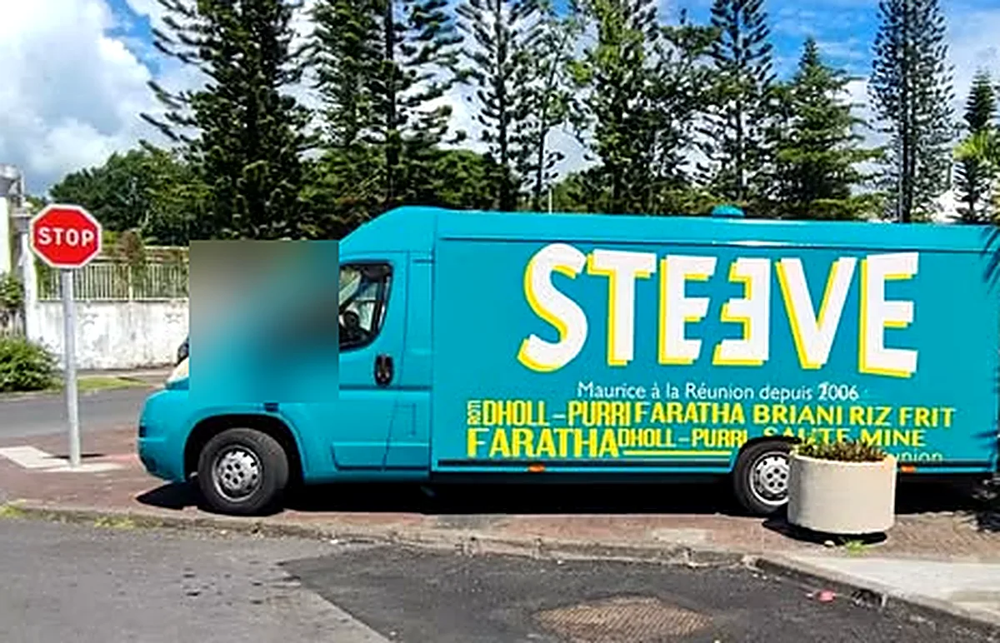
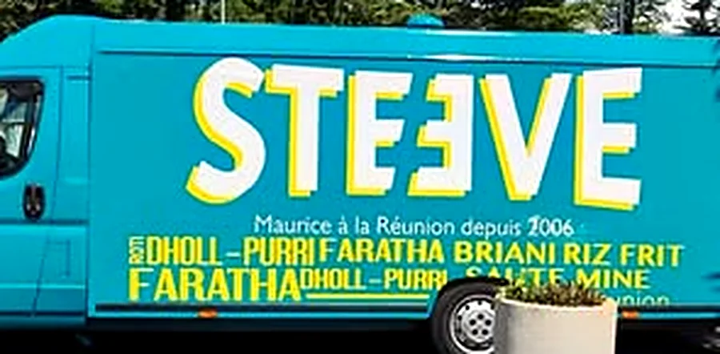
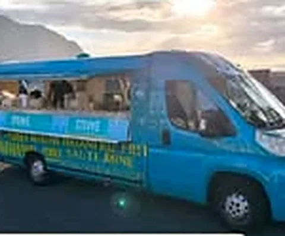

Publié le 1er mai 2026
« Bonne fête du 1er mai ! Nous serons ouvert aujourd'hui au centre ville de Saint-André de 11h à 13h. »Page Facebook de Chez Steeve

Un camion-bar turquoise près de la mairie de Saint-André, et des plats du jour à emporter qui sentent bon Maurice : dholl puri, roti, faratha, briani…
L'esprit Chez Steeve
Maurice à la Réunion depuis 2006
Les mots peints sur le camion de Chez Steeve
Depuis 2006, Chez Steeve fait voyager Saint-André jusqu'à l'île sœur. Chaque midi, le camion propose ses plats du jour à emporter, préparés avec des produits frais et locaux, où se mêlent les parfums de l'Inde, de la Chine et du terroir créole.

Les spécialités
Les grands classiques mauriciens peints sur le camion et présentés par Chez Steeve, à retrouver selon le plat du jour.
En tête des lettres jaunes du camion : le grand classique de Maurice.
Cité parmi les assiettes du midi qui racontent l'île.
Écrit deux fois sur le camion, signe d'une vraie spécialité de la maison.
Au menu peint sur le flanc du camion, aux côtés du riz frit.
Une valeur sûre du camion, peinte en lettres jaunes.
Le clin d'œil chinois de la cuisine métissée de Chez Steeve.
Faites glisser pour voir toutes les spécialités →
Où trouver le camion
Chaque midi
Avenue de la République, au centre-ville, de 11h à 13h.
Le dimanche
Le camion turquoise s'installe au marché de l'Ermitage.
Le premier samedi du mois
Rendez-vous au Barachois pour les amateurs de marchés.
L'emplacement du jour est annoncé sur la page Facebook de Chez Steeve.
Publié le 1er mai 2026
« Bonne fête du 1er mai ! Nous serons ouvert aujourd'hui au centre ville de Saint-André de 11h à 13h. »Page Facebook de Chez Steeve

Soir de marché au Barachois
Offrir pour Noël · Commande des fêtes
Un repas de famille, un pot entre collègues, une tablée de fin d'année ? Parlez de votre projet à Chez Steeve : dholl puri, faratha, briani… le traiteur mauricien de Saint-André vous répond directement sur WhatsApp.
Commander
Le camion turquoise
Facile à repérer avec ses lettres jaunes : « Maurice à la Réunion depuis 2006 ». On y parle français, créole et anglais.